Pripomienky a zoznamy hlasom
Povedz jednu vetu po slovensky a Hlasko vytvorí pripomienku, udalosť, nákupný zoznam alebo koncept správy. Reč sa rozpoznáva v telefóne.
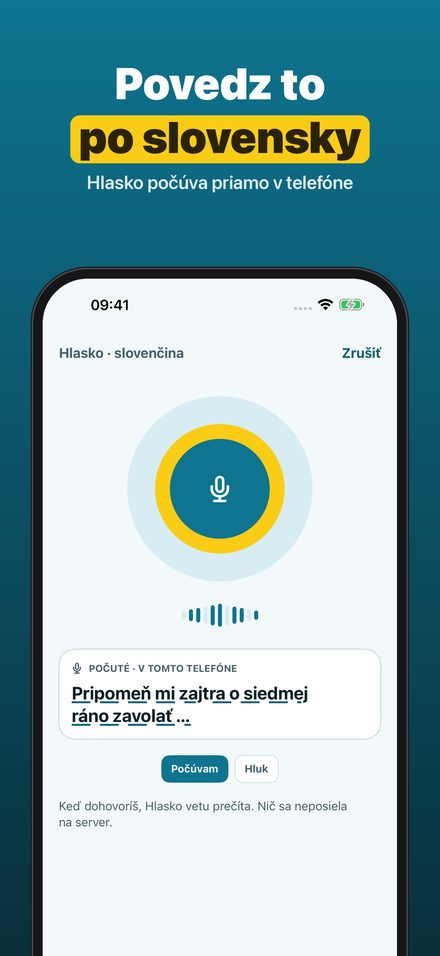
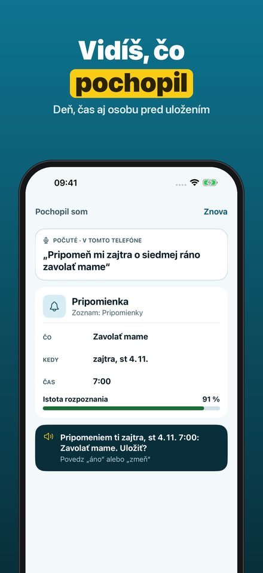
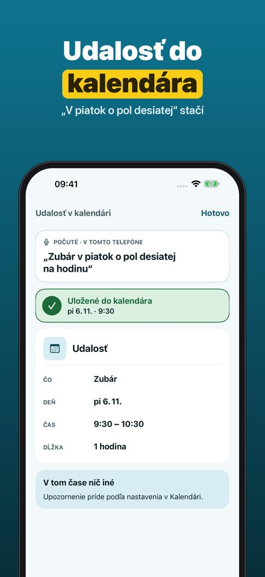
Hlasko je hlasový pomocník pre iPhone, ktorý rozumie po slovensky. Stlačíš Akčné tlačidlo, skratku alebo tlačidlo v aplikácii a povieš, čo potrebuješ: „Pripomeň mi zajtra o siedmej zavolať mame.“ Hlasko vetu rozoberie, ukáže ti deň, čas a osobu, nahlas ju zopakuje a po potvrdení ju uloží.
• Pripomienky a časovače jednou vetou
• Udalosti v kalendári aj s trvaním: „v piatok o pol desiatej na hodinu“
• Nákupný zoznam s množstvami, v zozname Pripomienok, ktorý zdieľaš s rodinou
• Koncepty správ a hovory kontaktom – správu vždy odošleš ty
• Pred uložením vidíš, čo Hlasko pochopil, a jedným ťuknutím to opravíš
• Vlastné príkazy: jedna veta, viac krokov
• Spúšťanie Akčným tlačidlom, skratkou alebo tlačidlom v aplikácii
• Reč sa rozpoznáva v telefóne; nič sa nenahráva
Pripomienky, časovače, prehľad Dnes a písanie príkazov fungujú bez nákupu. Hlasko Plus je jednorazový nákup: udalosti v kalendári, nákupný zoznam pre rodinu, koncepty správ, hovory a vlastné príkazy. Bez predplatného, bez reklám.
Hlasko počúva, len keď ho spustíš. Reč sa rozpoznáva v telefóne, ak to tvoj iPhone v danom jazyku podporuje; inak príkazy napíšeš – hlas sa nikdy neposiela na server. Rozpoznávanie sa môže pomýliť, preto pred uložením vždy vidíš, čo Hlasko pochopil. Správy nikdy neodosiela sám.
Przypomnienia i listy głosem
Powiedz jedno zdanie po polsku, a Hlasko utworzy przypomnienie, wydarzenie, listę zakupów lub szkic wiadomości. Mowa jest rozpoznawana w telefonie.
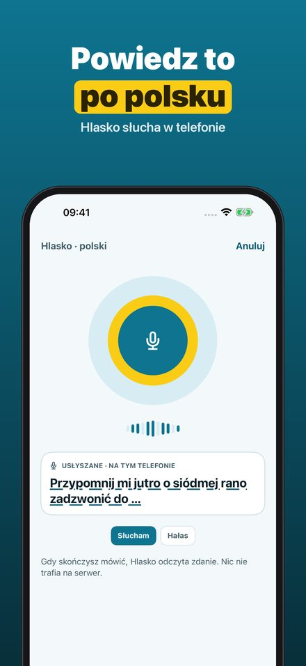
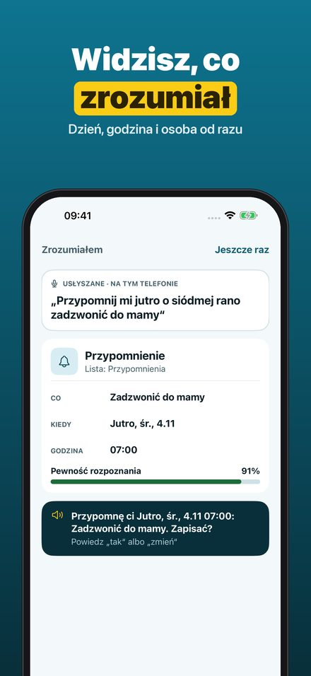
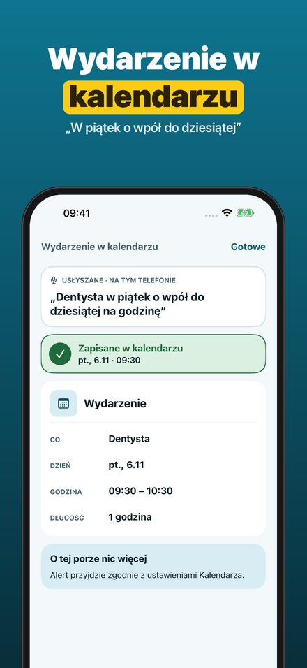
Hlasko to pomocnik głosowy na iPhone’a, który rozumie po polsku. Naciskasz przycisk czynności, skrót lub przycisk w aplikacji i mówisz, czego potrzebujesz: „Przypomnij mi jutro o siódmej zadzwonić do mamy.” Hlasko rozbiera zdanie, pokazuje dzień, godzinę i osobę, powtarza je na głos i po potwierdzeniu zapisuje.
• Przypomnienia i minutniki jednym zdaniem
• Wydarzenia w kalendarzu z czasem trwania: „w piątek o wpół do dziesiątej na godzinę”
• Lista zakupów z ilościami, na liście w Przypomnieniach, którą udostępniasz rodzinie
• Szkice wiadomości i połączenia z kontaktami – wiadomość zawsze wysyłasz Ty
• Przed zapisaniem widzisz, co Hlasko zrozumiał, i poprawiasz jednym dotknięciem
• Własne polecenia: jedno zdanie, kilka kroków
• Start przyciskiem czynności, skrótem lub przyciskiem w aplikacji
• Mowa rozpoznawana w telefonie; nic nie jest nagrywane
Przypomnienia, minutniki, przegląd Dziś i wpisywanie poleceń działają bez zakupu. Hlasko Plus to jednorazowy zakup: wydarzenia w kalendarzu, lista zakupów dla rodziny, szkice wiadomości, połączenia i własne polecenia. Bez subskrypcji, bez reklam.
Hlasko słucha tylko wtedy, gdy go uruchomisz. Mowa jest rozpoznawana w telefonie, jeśli Twój iPhone obsługuje to w danym języku; w przeciwnym razie wpisujesz polecenia – głos nigdy nie trafia na serwer. Rozpoznawanie może się mylić, dlatego przed zapisaniem zawsze widzisz, co Hlasko zrozumiał. Wiadomości nigdy nie wysyła sam.
Emlékeztetők és listák hanggal
Mondj egy mondatot magyarul, és a Hlasko emlékeztetőt, naptáreseményt, bevásárlólistát vagy üzenetvázlatot készít. A beszédfelismerés a telefonon történik.
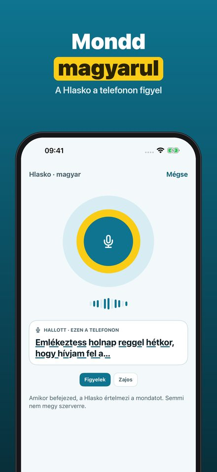
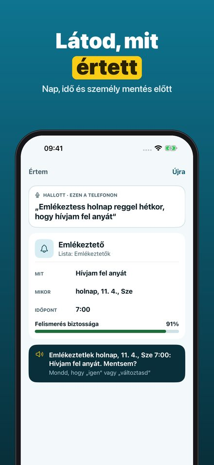
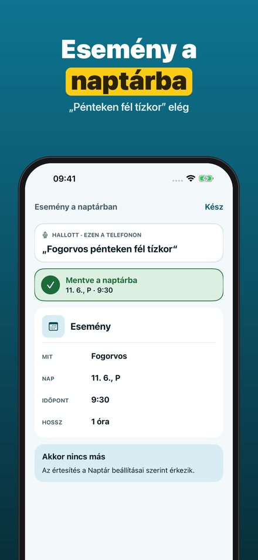
A Hlasko magyarul értő hangalapú segéd iPhone-ra. Megnyomod a Művelet gombot, egy parancsikont vagy az alkalmazás gombját, és elmondod, mire van szükséged: „Emlékeztess holnap hétkor, hogy hívjam fel anyát.” A Hlasko elemzi a mondatot, megmutatja a napot, az időpontot és a személyt, hangosan megismétli, és jóváhagyás után elmenti.
• Emlékeztetők és időzítők egyetlen mondattal
• Naptáresemények időtartammal: „pénteken fél tízkor egy órára”
• Bevásárlólista mennyiségekkel, az Emlékeztetők egy listáján, amelyet megoszthatsz a családdal
• Üzenetvázlatok és hívások – az üzenetet mindig te küldöd el
• Mentés előtt látod, mit értett a Hlasko, és egy koppintással javítod
• Saját parancsok: egy mondat, több lépés
• Indítás a Művelet gombbal, parancsikonnal vagy az alkalmazás gombjával
• A beszédet a telefon ismeri fel; semmit nem rögzít
Az emlékeztetők, az időzítők, a Mai nap áttekintés és a parancsok begépelése vásárlás nélkül is működik. A Hlasko Plus egyszeri vásárlás: naptáresemények, családi bevásárlólista, üzenetvázlatok, hívások és saját parancsok. Nincs előfizetés, nincs reklám.
A Hlasko csak akkor figyel, ha elindítod. A beszédfelismerés a telefonon történik, ha az iPhone-od támogatja az adott nyelven; ha nem, begépeled a parancsot – a hangod soha nem kerül szerverre. A felismerés tévedhet, ezért mentés előtt mindig látod, mit értett a Hlasko. Üzenetet soha nem küld el magától.
Mementouri și liste cu vocea
Spune o propoziție în română, iar Hlasko creează un memento, un eveniment, o listă de cumpărături sau o ciornă de mesaj. Vorbirea e recunoscută pe telefon.
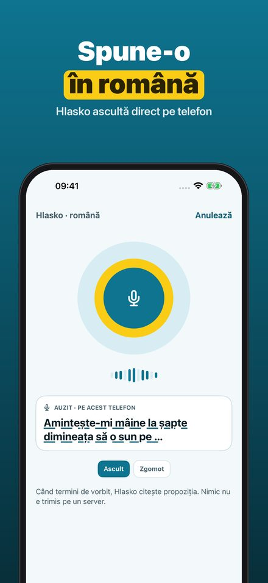
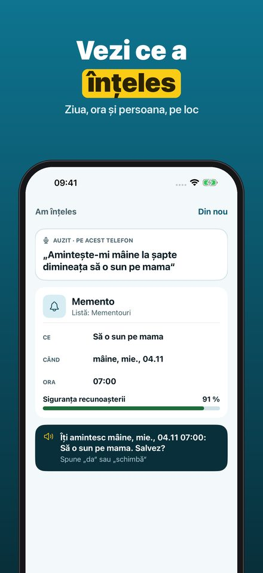
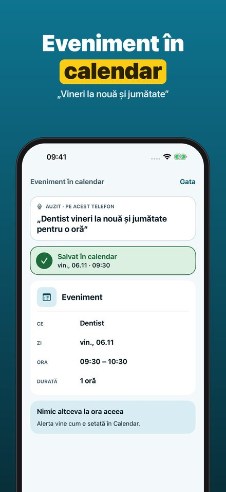
Hlasko este un asistent vocal pentru iPhone care înțelege română. Apeși butonul Acțiune, o scurtătură sau butonul din aplicație și spui de ce ai nevoie: „Amintește-mi mâine la șapte să o sun pe mama.” Hlasko analizează propoziția, îți arată ziua, ora și persoana, o repetă cu voce tare și o salvează după confirmare.
• Mementouri și cronometre dintr-o singură propoziție
• Evenimente în calendar cu durată: „vineri la nouă și jumătate, o oră”
• Listă de cumpărături cu cantități, într-o listă din Mementouri pe care o partajezi cu familia
• Ciorne de mesaje și apeluri către contacte – mesajul îl trimiți tu
• Înainte de salvare vezi ce a înțeles Hlasko și corectezi dintr-o atingere
• Comenzi proprii: o propoziție, mai mulți pași
• Pornire cu butonul Acțiune, o scurtătură sau butonul din aplicație
• Vorbirea e recunoscută pe telefon; nu se înregistrează nimic
Mementourile, cronometrele, rezumatul Azi și comenzile scrise funcționează fără cumpărare. Hlasko Plus este o achiziție unică: evenimente în calendar, listă de cumpărături pentru familie, ciorne de mesaje, apeluri și comenzi proprii. Fără abonament, fără reclame.
Hlasko ascultă doar când îl pornești. Vorbirea e recunoscută pe telefon dacă iPhone-ul tău permite asta în limba respectivă; altfel scrii comenzile – vocea nu ajunge niciodată pe un server. Recunoașterea poate greși, așa că înainte de salvare vezi mereu ce a înțeles Hlasko. Mesajele nu le trimite niciodată singur.
Υπενθυμίσεις & λίστες με φωνή
Πες μια πρόταση στα ελληνικά και το Hlasko δημιουργεί υπενθύμιση, συμβάν, λίστα για ψώνια ή πρόχειρο μηνύματος. Η ομιλία αναγνωρίζεται στο τηλέφωνο.
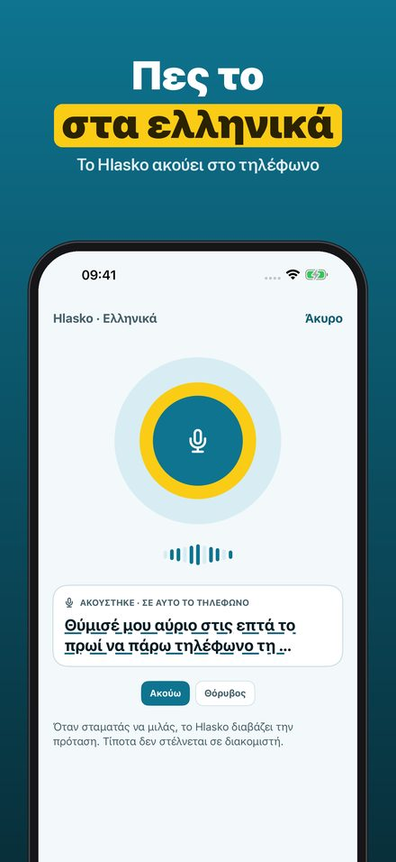
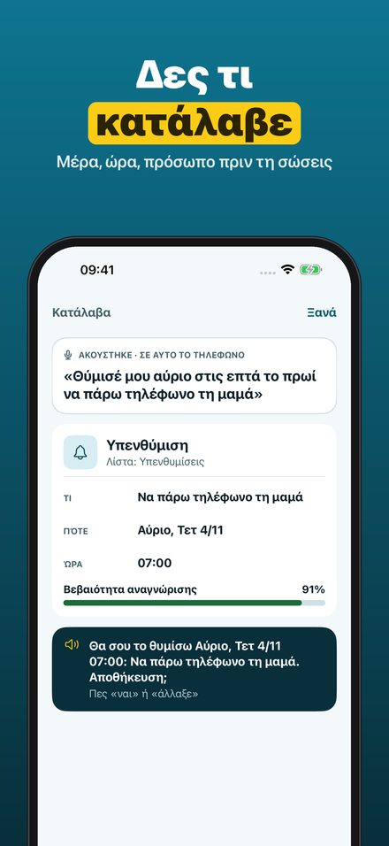
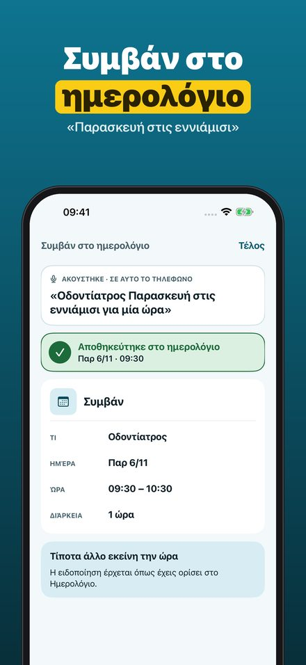
Το Hlasko είναι φωνητικός βοηθός για iPhone που καταλαβαίνει ελληνικά. Πατάς το κουμπί Ενέργειας, μια συντόμευση ή το κουμπί της εφαρμογής και λες τι χρειάζεσαι: «Θύμισέ μου αύριο στις επτά να πάρω τη μαμά.» Το Hlasko αναλύει την πρόταση, σου δείχνει μέρα, ώρα και πρόσωπο, την επαναλαμβάνει φωναχτά και την αποθηκεύει μόλις επιβεβαιώσεις.
• Υπενθυμίσεις και χρονόμετρα με μία πρόταση
• Συμβάντα στο ημερολόγιο με διάρκεια: «την Παρασκευή στις εννιάμισι για μία ώρα»
• Λίστα για ψώνια με ποσότητες, σε λίστα των Υπενθυμίσεων που μοιράζεσαι με την οικογένεια
• Πρόχειρα μηνύματα και κλήσεις σε επαφές – το μήνυμα το στέλνεις εσύ
• Πριν την αποθήκευση βλέπεις τι κατάλαβε το Hlasko και το διορθώνεις με ένα άγγιγμα
• Δικές σου εντολές: μία πρόταση, πολλά βήματα
• Εκκίνηση με το κουμπί Ενέργειας, συντόμευση ή το κουμπί της εφαρμογής
• Η ομιλία αναγνωρίζεται στο τηλέφωνο· τίποτα δεν ηχογραφείται
Οι υπενθυμίσεις, τα χρονόμετρα, η σύνοψη Σήμερα και οι γραπτές εντολές λειτουργούν χωρίς αγορά. Το Hlasko Plus είναι εφάπαξ αγορά: συμβάντα στο ημερολόγιο, λίστα για ψώνια για την οικογένεια, πρόχειρα μηνύματα, κλήσεις και δικές σου εντολές. Χωρίς συνδρομή, χωρίς διαφημίσεις.
Το Hlasko ακούει μόνο όταν το ξεκινάς. Η ομιλία αναγνωρίζεται στο τηλέφωνο, αν το iPhone σου το υποστηρίζει σε αυτή τη γλώσσα· αλλιώς γράφεις τις εντολές – η φωνή σου δεν στέλνεται ποτέ σε διακομιστή. Η αναγνώριση μπορεί να κάνει λάθος, γι’ αυτό πριν την αποθήκευση βλέπεις πάντα τι κατάλαβε το Hlasko. Μηνύματα δεν στέλνει ποτέ μόνο του.
Připomínky a seznamy hlasem
Řekni jednu větu česky a Hlasko vytvoří připomínku, událost, nákupní seznam nebo koncept zprávy. Řeč se rozpoznává v telefonu.
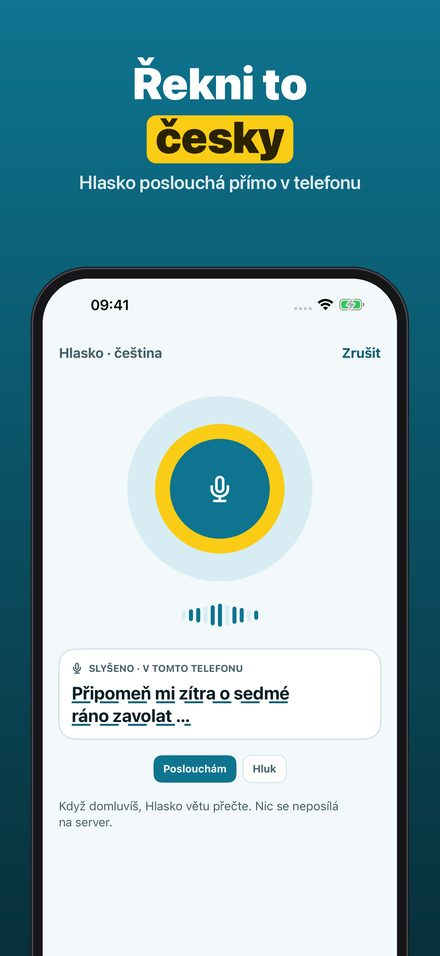
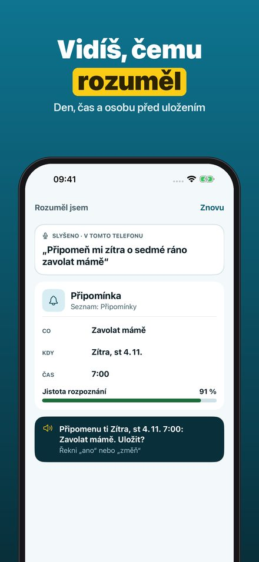
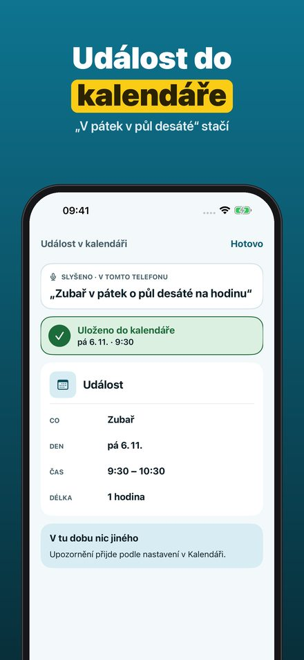
Hlasko je hlasový pomocník pro iPhone, který rozumí česky. Stiskneš Akční tlačítko, zkratku nebo tlačítko v aplikaci a řekneš, co potřebuješ: „Připomeň mi zítra v sedm zavolat mámě.“ Hlasko větu rozebere, ukáže den, čas a osobu, nahlas ji zopakuje a po potvrzení ji uloží.
• Připomínky a časovače jednou větou
• Události v kalendáři i s délkou: „v pátek v půl desáté na hodinu“
• Nákupní seznam s množstvím, v seznamu Připomínek, který sdílíš s rodinou
• Koncepty zpráv a hovory kontaktům – zprávu vždy odešleš ty
• Před uložením vidíš, čemu Hlasko rozuměl, a jedním klepnutím to opravíš
• Vlastní příkazy: jedna věta, více kroků
• Spuštění Akčním tlačítkem, zkratkou nebo tlačítkem v aplikaci
• Řeč se rozpoznává v telefonu; nic se nenahrává
Připomínky, časovače, přehled Dnes a psaní příkazů fungují bez nákupu. Hlasko Plus je jednorázový nákup: události v kalendáři, nákupní seznam pro rodinu, koncepty zpráv, hovory a vlastní příkazy. Bez předplatného, bez reklam.
Hlasko poslouchá, jen když ho spustíš. Řeč se rozpoznává v telefonu, pokud to tvůj iPhone v daném jazyce podporuje; jinak příkazy napíšeš – hlas se nikdy neposílá na server. Rozpoznávání se může splést, proto před uložením vždy vidíš, čemu Hlasko rozuměl. Zprávy nikdy neodesílá sám.